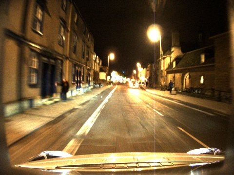
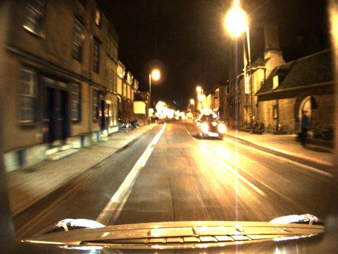
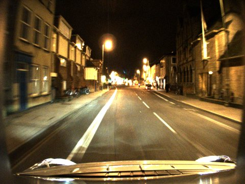
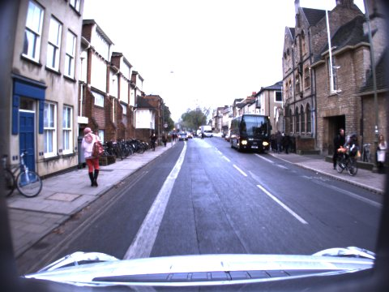

Try it: open one decision
Seven real decisions at α = 0.10. Lines connect the patch pairs that survive mutual-nearest-neighbour matching on the centre frame of the sequence; hover a line to isolate it.
Sequence-based visual place recognition (VPR) for loop closure and robot relocalization must decide whether the retrieved top-1 candidate should be accepted. Conformal calibration can set this accept/reject threshold, but its finite-sample guarantees require exchangeability between calibration and deployment, a requirement that cross-condition deployment violates. We therefore claim no formal guarantee under condition shift; this paper instead asks which verification score and calibration design keep a target false-discovery rate (FDR) empirically satisfied across realistic appearance change. We present SafeVPR, a non-trainable pipeline that replaces the backbone cosine similarity with a mutual-nearest-neighbour (MNN) patch score from frozen DINOv2 features, and flat Learn-Then-Test (LTT) calibration with Mondrian LTT (per-bin Bonferroni-corrected thresholds). Across 23 cross-condition ground-vehicle setups (Oxford RobotCar, NCLT, St Lucia; three frozen backbones), SafeVPR meets the FDR target on 23/23 setups at α = 0.10 (mean accepted FDR 0.014, mean TPR 0.75) and on 22/23 at α = 0.05 with 22 retaining non-trivial coverage (best cosine variant: 22/23 valid but 17 non-trivial); under leave-one-dataset-out calibration, validity drops to 20/23 with 14 retaining useful coverage (strongest cosine baseline: 16/23 and 10), and on texture-poor scenery (Nordland) the verifier is uninformative and the system abstains entirely; we report both as limitations. In a pose-graph relocalization study, gating loop-closure constraints reduces erroneous constraints by 29.6× and cuts the median trajectory error from 95.5 m to 9.7 m.



A 10-frame query sequence retrieves a top-1 candidate. Its cosine score is discarded.

s = matched patches / 256
Frozen DINOv2 patch tokens are matched by mutual nearest neighbour with a Lowe ratio test. The bounded score s ∈ [0, 1] is the surviving fraction, averaged over the sequence.
Calibration scores from other conditions are split into 5 quantile bins. Each bin gets its own Bonferroni-corrected LTT threshold τb; a bin with no safe threshold abstains.
Every image and number above is real: an Oxford night query, its day candidate with the patch matches that survive, and the calibration histogram (grey: true matches, red: false matches) with its per-bin thresholds at α = 0.10.
Choose a target false-discovery rate α and a held-out deployment. Both methods use the same Mondrian calibrator, fitted on the other conditions of the same backbone, so the only difference is the score. Click any cell of the board to inspect that setup.
Realized FDR across budgets
Default view: St Lucia with NetVLAD, the one setup where cosine + Mondrian exceeds α = 0.10 in the paper's Table I. Counts are computed with the paper's protocol and reproduce Table I exactly at α = 0.05 and 0.10.
Mondrian calibration transfers a per-bin error map. It stays valid as long as the false-match rate inside each score bin is the same at deployment, however far the scores themselves move.
(a) Oxford night, D²-VPR backbone
(b) Drift of the per-bin false rate, all 23 setups
(a) At night the cosine score collapses into its two lowest bins, whose calibrated error rates no longer describe it; the patch score keeps both density and per-bin false rate aligned. (b) Number of setups whose occupancy-weighted drift exceeds each level (left is better): median drift is 3.7× lower for the patch score.
Seven real decisions at α = 0.10. Lines connect the patch pairs that survive mutual-nearest-neighbour matching on the centre frame of the sequence; hover a line to isolate it.
Every accepted match enters a pose graph as a 5 m position prior, on odometry from each dataset's real sensor stream (Oxford stereo VO, NCLT wheel and fibre-optic gyro, St Lucia profile VO). Pick any of the 23 setups.
Loading trajectories…
Across all 23 setups the gate cuts erroneous constraints from 5952 to 201 (29.6× fewer) and median trajectory error from 95.5 m to 9.7 m. On three NCLT setups with very accurate odometry, a few residual false accepts still hurt; a standard Huber kernel repairs them.
The held-out condition is never seen in calibration. Pass: empirical FDR ≤ α. Non-tr.: additionally coverage > 5%. Red tint deepens with failure severity.
On Nordland's forests and snow the patch score is no better than chance (AUROC 0.52). The calibrator detects this and accepts 0 of 9657 queries: the FDR target holds only vacuously and the robot gets no localization there.
Calibrating on the other datasets keeps 20 of 23 setups valid, 14 with useful coverage. The three failures share one cause: urban calibration opens the lowest score bin, and NCLT's foliage floods it. A small target-domain calibration slice closes the gap.
At α = 0.01 every setup abstains for both methods: about 1.5k calibration queries over 5 bins cannot push the bounds that low. Plan for α ≥ 0.05, or roughly 10× more calibration data.
All validation uses forward-facing cameras on ground vehicles at 1 to 5 m/s. Aerial, legged and humanoid platforms change the viewpoint geometry and need their own calibration.
@article{sier2026safevpr,
title = {{SafeVPR}: Patch-Based Verification with Empirical {FDR} Control
for Cross-Condition Sequence Visual Place Recognition},
author = {Sier, Ha and Zhang, Jiaqiang and Zou, Zhuo and Yu, Xianjia and Westerlund, Tomi},
journal = {IEEE Robotics and Automation Letters},
year = {2026},
eprint = {2605.28048},
archivePrefix = {arXiv}
}